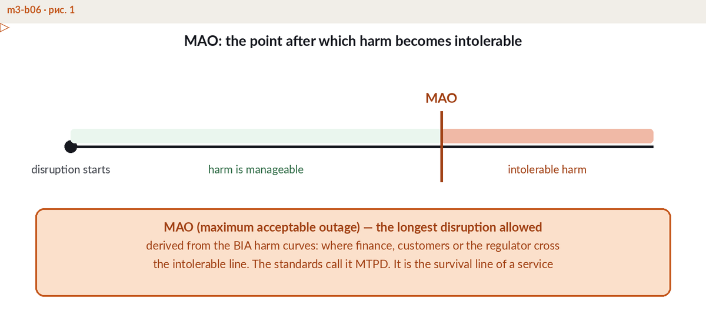
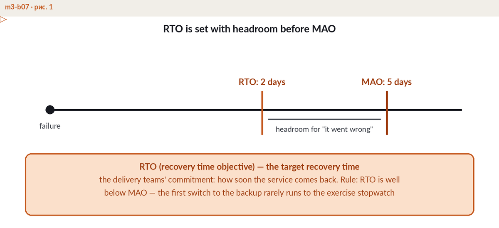

"We will recover as fast as possible" is not a plan — it is a hope. Recovery becomes manageable when it is expressed as targets: how long the business survives an outage (MAO), how fast a process must be restored (RTO), how much data may be lost (RPO), and what minimum level of service must be kept during recovery (MBCO). Process owners propose the numbers based on the Business Impact Analysis (BIA), finance checks them against the cost of downtime, executive management approves them, and the board sees the aggregate picture. The approved numbers then flow into architecture decisions, supplier SLAs and test plans.
The Maximum Acceptable Outage is the longest a process can stand still before the damage becomes unacceptable: contract penalties, regulatory breach, patient safety, irreversible loss of clients. Some standards call the same boundary MTPD — the Maximum Tolerable Period of Disruption. Beyond this line you are no longer managing an incident; you are managing the survival of the business. The MAO comes from business analysis, not from IT: it reflects what customers, contracts and regulators will tolerate.

The Recovery Time Objective is the target time to restore the process. It must sit inside the MAO with a margin, because real recoveries slip: a key person is unreachable, a step fails, a dependency surprises you. A margin of 30-50% of the MAO is a reasonable rule of thumb. Speed is bought, not declared — the shorter the RTO, the more expensive the standby architecture behind it, which is why an RTO is approved together with its price.

The Recovery Point Objective limits data loss, measured in time. An RPO of 5 minutes means the last usable copy of the data is never older than 5 minutes — which dictates replication or backup at least that frequent. RTO and RPO answer different questions: RTO is about when customers are served again, RPO is about how much of their data survived. And a backup that has never been restored in a test does not count as a backup.
The Minimum Business Continuity Objective defines the level of service the company commits to deliver while recovery is under way — for example, 50% of normal throughput, priority customers first. Without an MBCO, recovery implicitly aims at 100% from the first minute, which inflates cost and blocks realistic decisions about what to restore first.
Consider a payment processor whose merchant contracts trigger penalties after 6 hours of outage, and whose clients begin switching providers after roughly a working day. The company sets the MAO at 6 hours. The RTO is set at 4 hours, leaving a 2-hour margin; the last failover test came in at 3 hours 10 minutes, so the chain holds — tested time under RTO, RTO under MAO. Replication to the standby site runs every 5 minutes, matching an approved RPO of 5 minutes. The MBCO states that during recovery the company keeps at least 50% of normal transaction throughput, with card authorisation prioritised over reporting services. Every number has an owner, an approval and a test behind it.
| Objective | Question it answers | Example value |
|---|---|---|
| MAO (MTPD) | How long can we survive an outage? | 6 hours |
| RTO | How fast must the process be restored? | 4 hours (margin 2 hours) |
| RPO | How much data may we lose? | 5 minutes |
| MBCO | What minimum service do we keep meanwhile? | 50% of throughput |
How these targets are derived from impact analysis — and what they cost — is the subject of module M3 of the ERGP programme. For the method itself, start with our guide to the Business Impact Analysis.
These objectives are part of the working language of ERGP — the first resilience governance certification fully available in Arabic, also in English. 94 chapters, six modules, a verifiable certificate.
Explore the ERGP programme